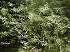
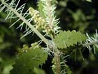
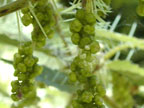
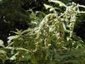
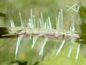

Tree nettle
Urtica ferox
Other names
ongaonga
Description
Grows up to 2m tall as a perennial straggly bush. The plants are much branched and have stinging hairs up to 6mm long covering the stalks and margins of the leaves. Flowers are small and green.
Similar plants
Other nettles. The annual nettle is much smaller and not woody. The perennial nettle usually grows as a single stem. It forms dense spreading colonies from very tough rhizomes.
Distribution
Tree nettles are abundant throughout NZ, in bush and in open country. Particularly on waste and neglected land. The tree nettle is common on the fringes and within bush as far south as Otago.
Toxin
Histamine, serotonin and acetylcholine are present as well as other pain producing agents that have been isolated but whose identity is not clear. Poisonous parts: fine white stinging hairs. The tree nettle Urtica ferox is the most important species as it is the most dangerous. Other species cause an intense short lived irritation.
Species affected
All animals , particularly dogs, horses, sheep and humans.
Clinical signs acute
Dogs develop trembling, vomiting, difficulty breathing and general pain. Convulsions and death may follow in severe cases. A temporary loss of scenting ability has been reported in the dog. Horses may become excitable and restless. Lesions can be seen in sheep on the udder and hairless parts. In humans there are reports of fatal poisoning with nettles both in NZ and overseas. Initially in people there is a pricking sensation, rapidly followed by reddening and soreness of the skin, which passes away after a few hours. In severe and fatal cases, stomach cramp, difficulty in breathing and exhaustion have been reported. In cases that survive there may be muscle soreness for a period of days afterwards.
Clinical signs chronic
Post mortem signs
Wheals may be observed on the skin.
Diagnosis
Based on observation of wheals and a history of possible contact.
Differential diagnosis
Insect bites or stings, food allergies, toxic chemicals such as turpentine, carbolic acid, carbon disulfide or crude oil. Also medications that cause an allergic reaction.
Treatment
Rapid acting topical adrenocorticosteroids, such as hydrocortisone or prednisolone will control itching. Antihistamines are of questionable value and may induce urticaria if given rapidly iv. Usually local treatment of the lesions are not necessary, however in especially severe cases, cold packs of water, vinegar or alcohol (70%) may be applied.
Prognosis
Wheals usually disappear spontaneously, scratching or rubbing may induce secondary bacterial infections.
Prevention
References
Conner H.E. The Poisonous Plants In New Zealand. 1992. GP Publications Ltd, Wellington
 plant |
 |
|
|
|
 |
|
|
 |
 stinging hairs |
|
|
|
|
|